01
Capture
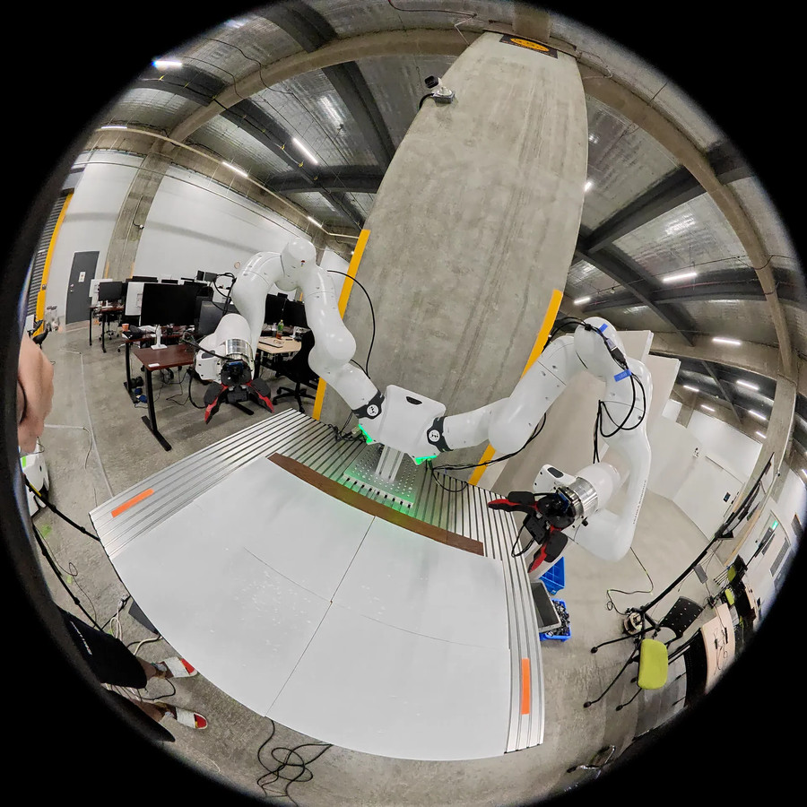
Capture the environment with a wide-angle camera, then project selected frames into pinhole views.
FISHEYE VIDEOROBOT LEARNING · REAL-TO-SIMULATION
3DGS Scene Verification for Reliable Policy Evaluation
When can a reconstructed world be trusted to evaluate a robot?
Connecting real scenes, fisheye vision, and policy performance.
1 AIRoA 2 Waseda University
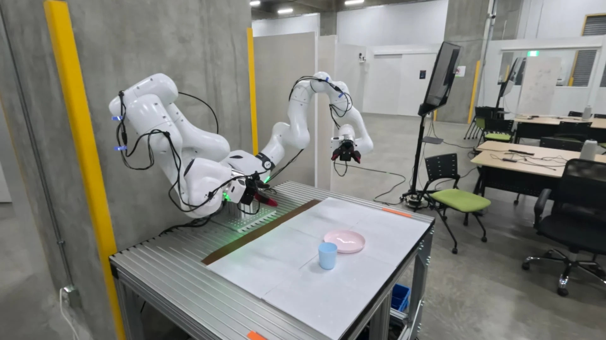
REAL WORLD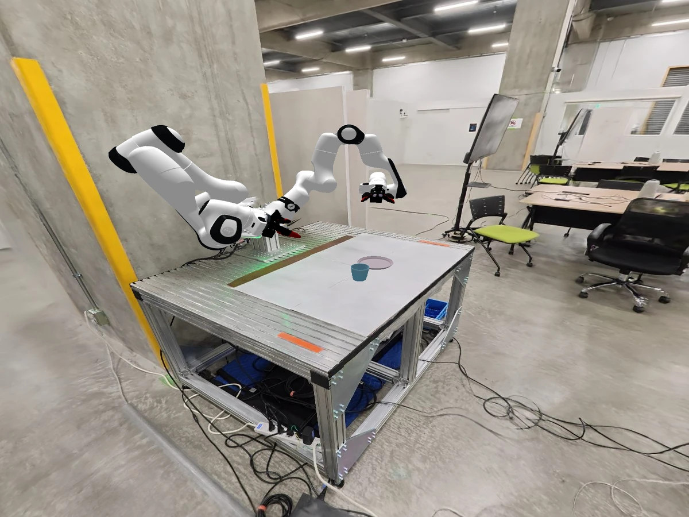
RECONSTRUCTED WORLDTHE QUESTION
Evaluating vision–language–action policies on real robots is costly and difficult to reproduce. 3D Gaussian Splatting (3DGS) makes it possible to reconstruct real environments, but visual realism alone does not establish whether a simulator will select the better policy.
YUBI-Real2Sim studies that connection. We combine scene reconstruction, object modeling, and MuJoCo simulation with the dual fisheye wrist views used by YUBI. Controlled changes to the reconstruction let us investigate how holes, floaters, and warped surfaces affect policy evaluation.
THE FRAMEWORK
Real-world appearance.
Physical interaction. The same wrist views.

Capture the environment with a wide-angle camera, then project selected frames into pinhole views.
FISHEYE VIDEO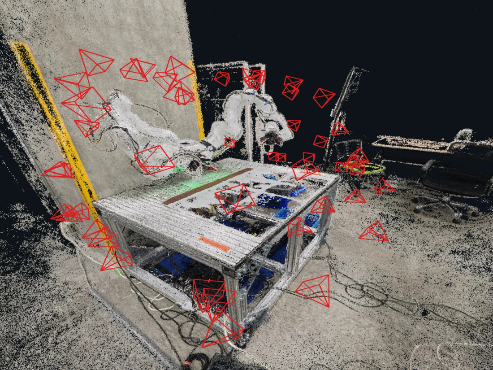
Estimate camera poses and geometry, then optimize a 3D Gaussian Splatting background.
COLMAP · OpenMVS · 3DGSRegister the scene to the robot and combine object visual meshes with collision geometry.
OBJECT MESHES · MuJoCo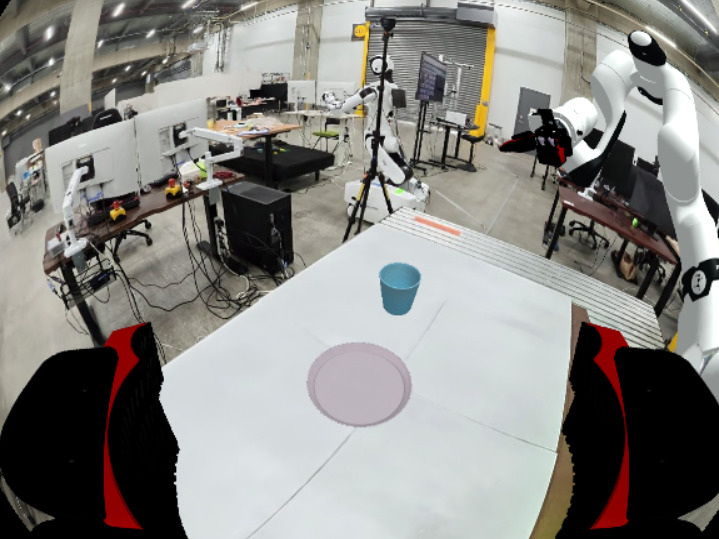
Render both calibrated wrist-camera views and execute policy actions in a closed simulation loop.
DUAL WRIST VIEWS · VLATHE BENCHMARK
Cup pick-and-place, tape placement,
and pen placement.
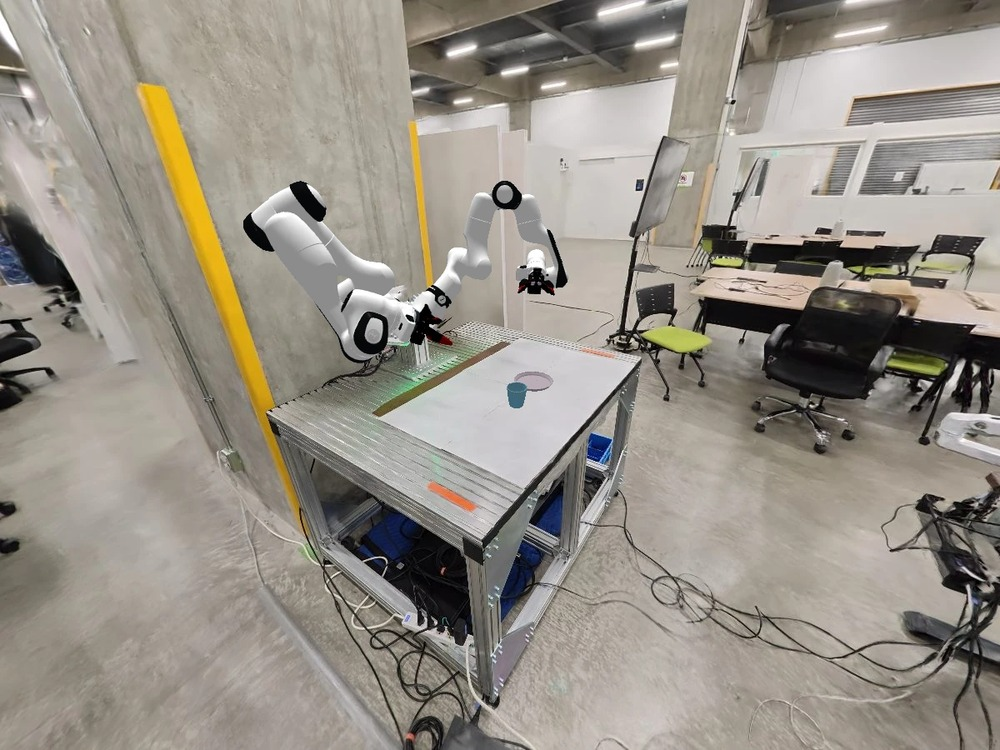
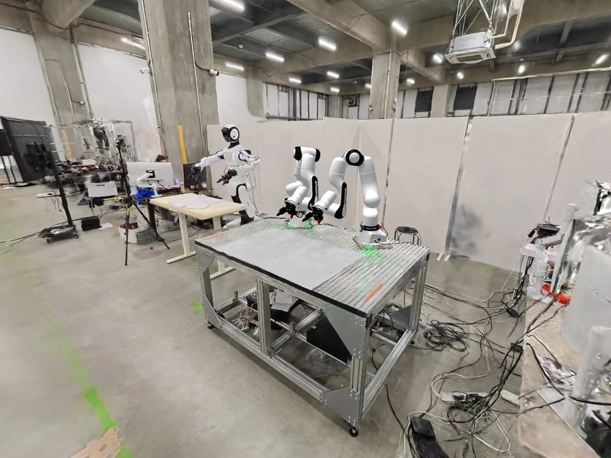
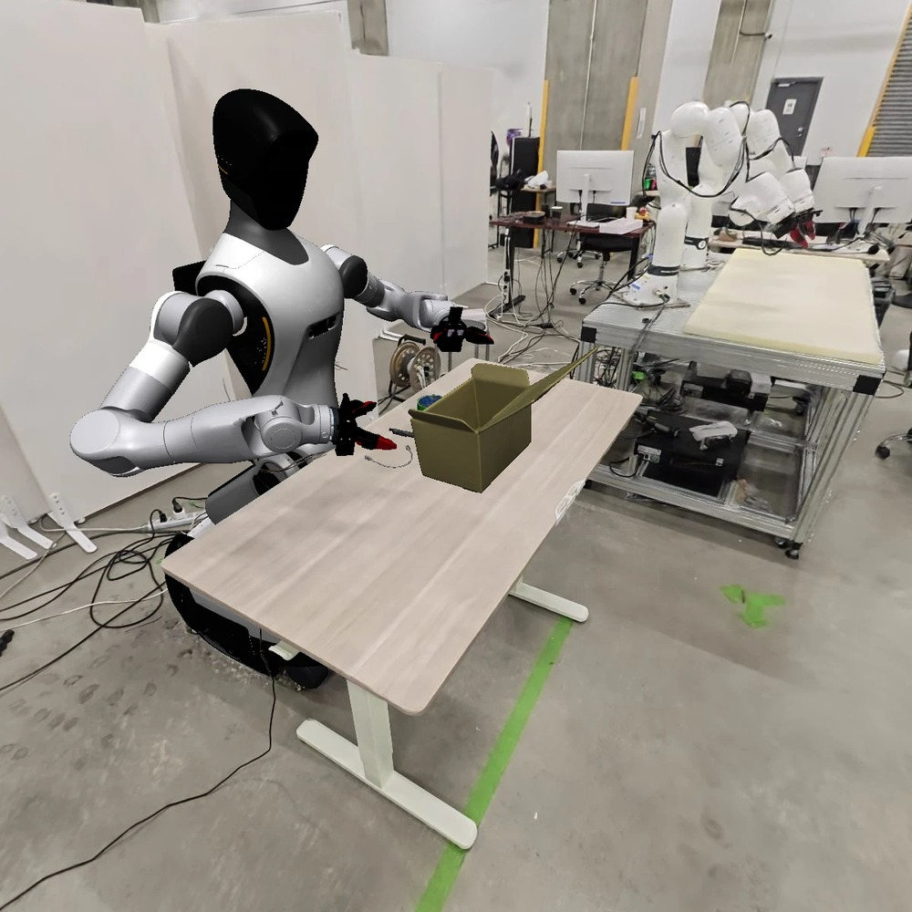
2 policies per task
20 real trials per policy
80 simulated trials per policy
INITIAL RESULTS
8 of 9 observed scene–task pairs
The two policies have the same observed ordering in eight comparisons. Flat / Cup is the single reversal. This measures pairwise ranking agreement, not agreement in absolute success rates.
Showing all nine comparisons.
| Scene | Task | Real π₁ / π₂ | Simulation π₁ / π₂ | Ranking |
|---|---|---|---|---|
| Duo | Cup | 18/20 → 19/20 | 21/80 → 78/80 | Agrees |
| Duo | Tape | 14/20 → 6/20 | 20/80 → 2/80 | Agrees |
| Duo | Pen | 17/20 → 6/20 | 25/80 → 1/80 | Agrees |
| Flat | Cup | 8/20 → 7/20 | 30/80 → 59/80 | Reversed |
| Flat | Tape | 19/20 → 1/20 | 50/80 → 14/80 | Agrees |
| Flat | Pen | 4/20 → 0/20 | 12/80 → 0/80 | Agrees |
| G2 | Cup | 8/20 → 16/20 | 18/80 → 47/80 | Agrees |
| G2 | Tape | 20/20 → 16/20 | 15/80 → 14/80 | Agrees |
| G2 | Pen | 19/20 → 7/20 | 48/80 → 0/80 | Agrees |
π₁: box80k. π₂: cup1trim for Cup; tateno80k for Tape and Pen. Counts: September 16, 2026 research snapshot. Download data ↗
These are exploratory point-estimate rankings on selected measurements, not a held-out validation estimate. Some differences are only one successful trial. Tray has tied zero real successes and is excluded; unreported tasks are not counted.
The source notes historical eligibility exclusions for Duo and G2 Tape and an execution caveat for Duo Pen. Excluding those three comparisons leaves 5/6 agreement (83.3%). The nine-pair summary does not override these caveats or establish statistically resolved policy ordering.
The downloadable September 16 count ledger is used consistently here, including Flat Cup simulation counts of 30/80 and 59/80; an earlier manuscript snapshot reports different counts.
BEYOND VISUAL REALISM
How the noisy scene breaks its policy ranking.
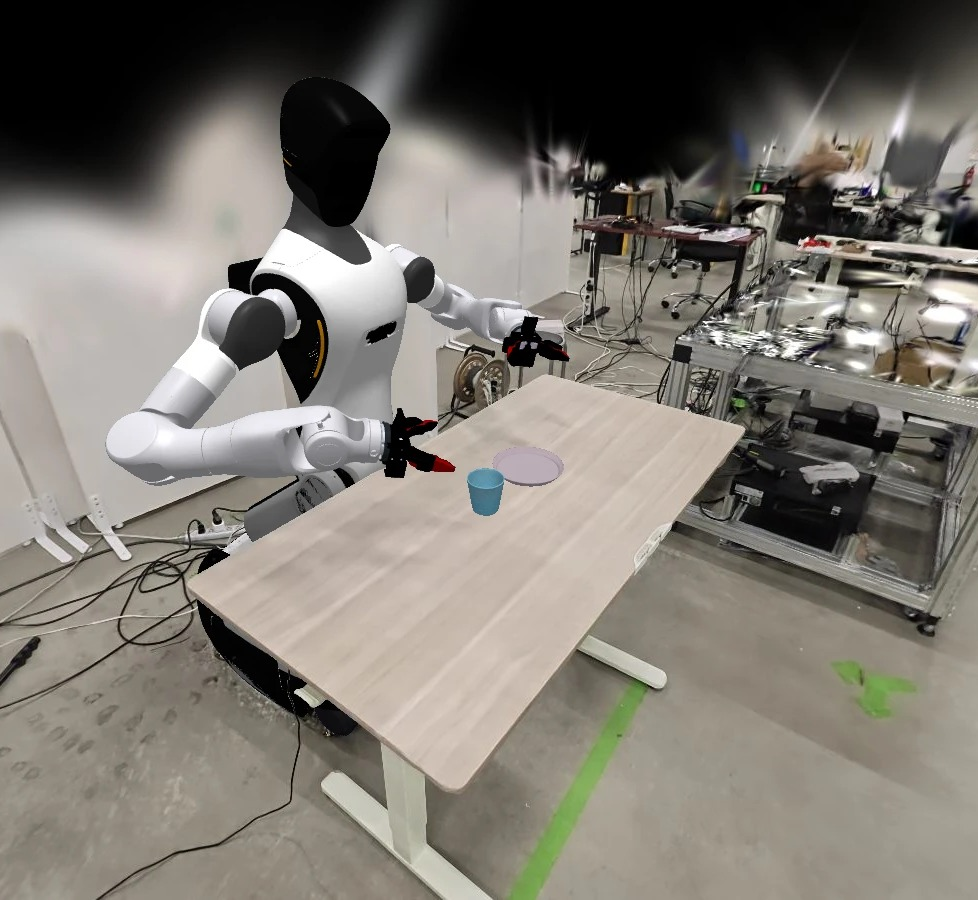
Remove parts of the reconstruction that can enter a wide-angle wrist-camera view.
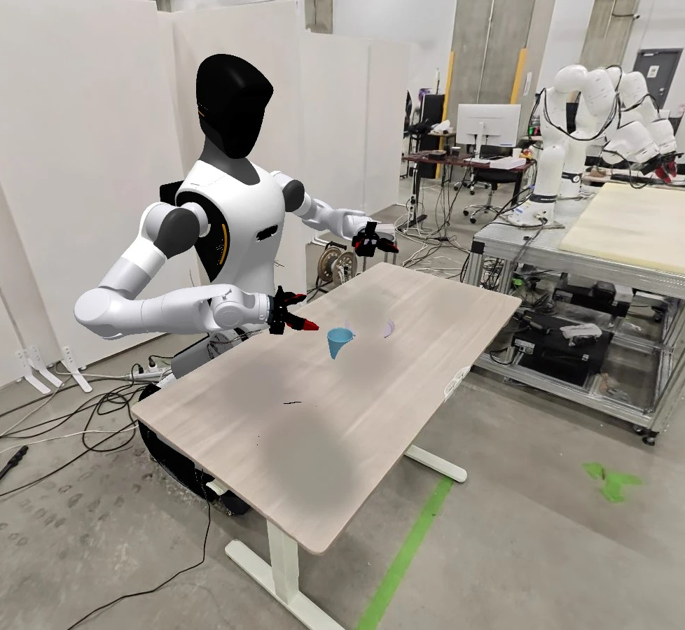
Introduce floating artifacts that alter the appearance of the workspace.
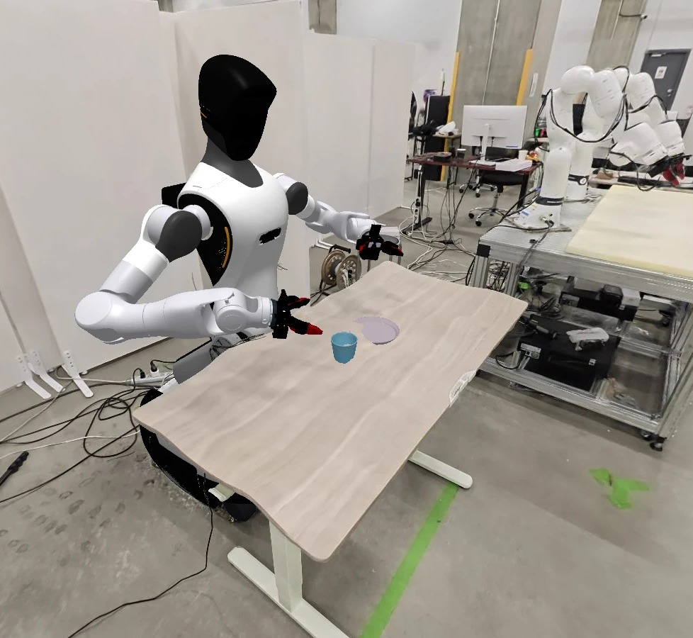
Distort the reconstructed surface while retaining the underlying physical setup.
Holes produce one ranking reversal per condition. Floaters produce one reversal or tie, depending on severity. Warping preserves the ordering despite significance changes in three comparisons. Random 30% capture removal produces two reversals.
Click a condition name to explore its scene rendering and YUBI observations. Each row: 9 policy comparisons across three scenes and three tasks, including Pen; 80 trials per policy. Changes are relative to the selected Clean reference.
| Artifact / condition | Significance changed | Ranking reversed |
|---|---|---|
| 2 (1 lost / 1 gained) | 1 | |
| 4 (4 lost / 0 gained) | 1 | |
| 1 (1 lost / 0 gained) | 0 | |
| 2 (1 lost / 1 gained) | 1 | |
| 1 (1 lost / 0 gained) | 1 | |
| 3 (2 lost / 1 gained) | 0 | |
| 5 (5 lost / 0 gained) | 0 | |
| 3 (3 lost / 0 gained) | 1 | |
| 3 (3 lost / 0 gained) | 2 |
Significance: two-sided Fisher’s exact test, unadjusted p < 0.05. “Changed” counts crossings of this threshold; it does not test whether the policy-performance gap itself changed significantly. Reversals are strict changes of ordering; ties are excluded.
Provisional September 17 snapshot. Intended condition labels include unresolved execution/provenance flags; historical Clean references are not matched controls. Download counts and definitions ↗
This is the manuscript’s intended-label aggregate, not the restricted execution-audited subset. Source flags remain on 2/9 comparisons for Hole 54°, 5/9 for Hole 90°, each floater condition and Warping, and 9/9 for each capture-coverage condition. They include wrong-scene executions, pending re-audits, and unverified reference matching; the downloadable data retains these counts.
Each severity is a separate condition, so rows reuse scene–task pairs and should not be summed as independent cases. Rank reversals compare point estimates and do not imply statistically resolved ordering.
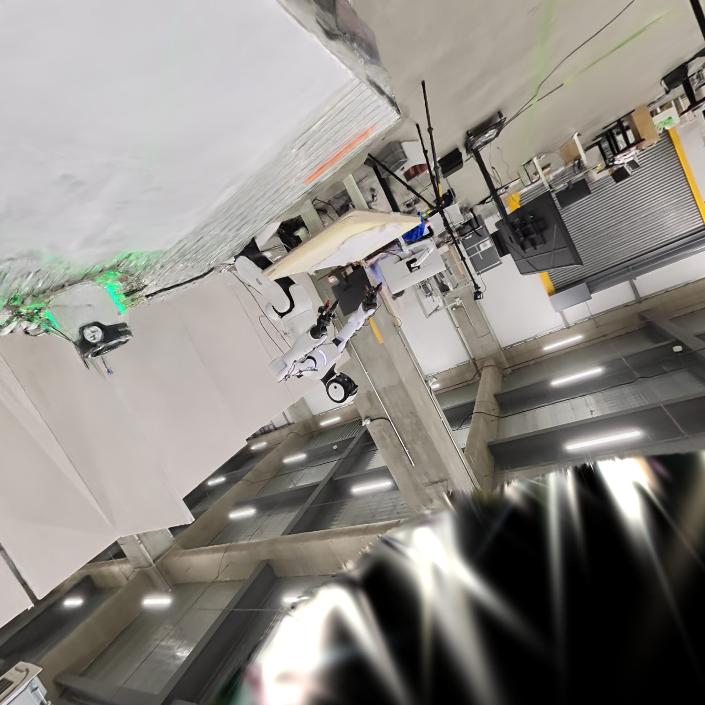
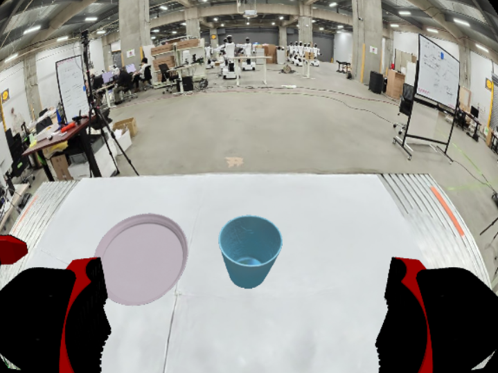
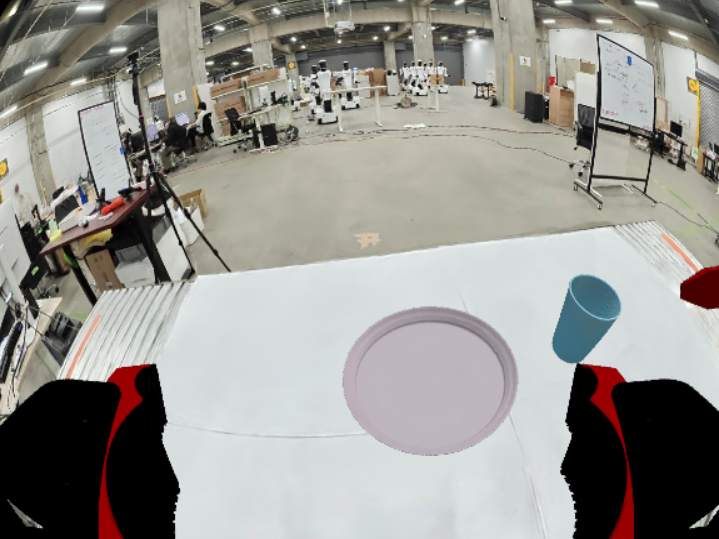
Example views from Flat / Hole 54°: Test image 60 and OBS frame 0. Test samples capture viewpoints; OBS samples recorded policy-observation poses. These are different viewpoints, not aligned image pairs. OBS examples show the full wrist-renderer output, with the camera housing hidden. These are illustrative views, not the 518×518 pinhole inputs used for the reported scores. Original NVS-SQA inputs: right / left. Click an image for full resolution.
NVS-SQA alone did not reliably identify policy-ranking failures in this study. Under reduced capture coverage, held-out Test scores changed by at most 0.060, compared with a 0.224 range across the three Clean scenes. G2’s contiguous and random 30% frame-removal variants reversed policy rankings while changing the score by only −0.018 and −0.039, respectively.
We fit quality thresholds on two scenes and evaluate on the held-out third, keeping all variants of each scene together. Across 15 matched scene–variant conditions and three tasks (Cup, Tape, Pen), SSIM on Test views and NVS-SQA on OBS views with camera-housing occlusion removed both achieve 32/45 correct task-level decisions (71.1%). Neither exceeds the constant “always reliable” baseline.
| Metric / views | Cup | Tape | Pen | Total | All-three |
|---|---|---|---|---|---|
| PSNR / Test | 8/15 | 8/15 | 15/15 | 31/45 (68.9%) | 9/15 |
| SSIM / Test | 8/15 | 9/15 | 15/15 | 32/45 (71.1%) | 7/15 |
| LPIPS / Test | 8/15 | 5/15 | 15/15 | 28/45 (62.2%) | 10/15 |
| NVS-SQA / Test | 7/15 | 8/15 | 15/15 | 30/45 (66.7%) | 13/15 |
| NVS-SQA / OBS | 13/15 | 4/15 | 15/15 | 32/45 (71.1%) | 4/15 |
| Always reliable | 8/15 | 12/15 | 15/15 | 35/45 (77.8%) | 6/15 |
OBS scores use 518×518, 90° pinhole re-renders at recorded wrist-camera poses, they are not the exact policy-input images. The original inputs include camera-housing occlusion. Entries count correct classifications, not successful robot trials. “All-three” is a separately fitted binary target: whether all three task rankings agree with real evaluation. It is not a combination of the task-level predictions. Pen’s 15/15 reflects constant predictions on all-reliable labels, not demonstrated failure detection.
Housing-removal evaluation, October 22, 2026: all 15 conditions were rescored with the same NVS-SQA model, 518×518 resolution, 90° field of view, camera poses, and recorded frames (19 paired frames per Flat condition; 38 per Duo/G2 condition, 950 images total). Paired renders identify pixels affected by camera-housing removal; all other pixels are retained exactly from the original evaluation images. Thresholds are refitted using the same scene-held-out protocol. Test scores are unchanged. Download comparison data ↗
For context, always predicting “reliable” achieves 35/45 (77.8%) task-level accuracy without a quality score. NVS-SQA misses all three Tape ranking failures. Test-view NVS-SQA performs better on the separate All-three target (13/15, versus 6/15 for always reliable and 9/15 for always unreliable), but these three-scene results do not establish a general scene-acceptance rule.
FOLLOW THE PROJECT
The public repository is in early development. A runnable pipeline,
evaluation code, and release documentation are planned.